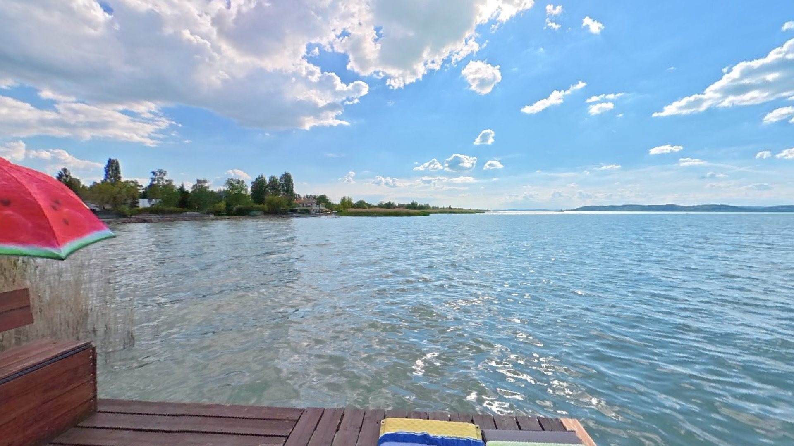
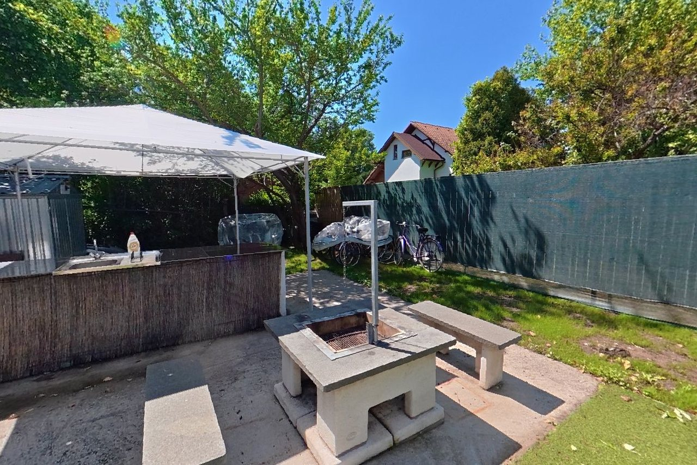

Éld át a Balatont. Már az érkezés előtt.
Hat apartman. Saját napozóstég. Igazi balatoni élmények.
8621 Zamárdi, Gáspár András utca 58.
Apartmankínálatunk és virtuális sétánk
Apartmanjaink vitorlástípusokról kapták a nevüket. Nézd meg a képeket, vagy járd be őket a 360°-os virtuális sétában – mintha már meg is érkeztél volna.

360° SÉTANézz körül nálunk indulás előtt
Nézd meg a kaput, a kertet, a grillezőt és a lépcsőházat, majd járd be az apartmanokat és szobáikat. A sétát a Gáspár András utcán át egészen a napozóstégig folytathatod – telefonon, számítógépen vagy VR-szemüvegben.
Szolgáltatásaink – élvezd a nyaralás minden percét
Vendégeink külön díj nélkül használhatják a kerékpárokat és a SUP-okat, valamint a grillezőt és a Balaton-parti napozóstéget.
Rendezvények Zamárdiban és környékén
Összegyűjtöttük a környék fontosabb programjait dátum szerint. Ahol van rá lehetőség, jegyet is foglalhatsz, vagy további részleteket olvashatsz a rendezvény saját oldalán.
Helyi szépségek & értékek
Fedezd fel Zamárdi látnivalóit, programjait és környékbeli kirándulóhelyeit. Összegyűjtöttünk néhány helyet, amelyet érdemes felkeresned.
Biztonság a vízen és a parton
Mentsd el a telefonodba ezeket a számokat. Indulás előtt ellenőrizd a viharjelzést és az időjárás-előrejelzést.
Viharjelzés most
A parti viharjelző lámpák sárga fénnyel villognak: percenként 45-öt első fokon, 90-et másodfokon.
Hivatalos forrás: HungaroMet – tavi viharjelzés · a szolgálat április 1. és október 31. között működik.Időjárás Zamárdiban
Előrejelzés betöltése…
Milyen messzire mehetsz be a Balatonba?
- Lehetőleg kijelölt strandon fürödj, és maradj a bójákon, illetve a „120 cm” jelzésű táblákon belül.
- Éjszaka és rossz látási viszonyok között ne fürödj, ne SUP-ozz és ne csónakázz.
- 6 év alatti gyermek, valamint 12 év alatti, úszni nem tudó gyermek csak felnőtt közvetlen felügyeletével mehet a vízbe.
- Gumimatrac, úszógumi, vízibicikli: a fürdőzés szabályai érvényesek rá, gyermeken legyen mentőmellény.
- SUP, kajak, kenu, evezős csónak: 14 év felett, úszni tudóként; legyen mentőmellény vagy leash (biztosítókötél).
- 1000 méteren belül ne keresztezd a nagyhajó útvonalát. Ne közelítsd meg 60 méternél jobban hátulról, és 30 méternél jobban oldalról.
- Vitorlás: 6-os Beaufort alatti szélben a parttól 1500 m-ig, 6–8 között 200 m-ig (strandon kívül), 8 felett tilos.
- Ha villogni kezd a viharjelző, indulj azonnal a part felé. A vihar 30–90 percen belül érkezhet.
A Zephyr Apartmanház vendégeinek vízi mentőmellényt biztosítunk. Kérésre a helyszínen segítünk a megfelelő méret kiválasztásában, és megmutatjuk a mentőmellény helyes használatát.